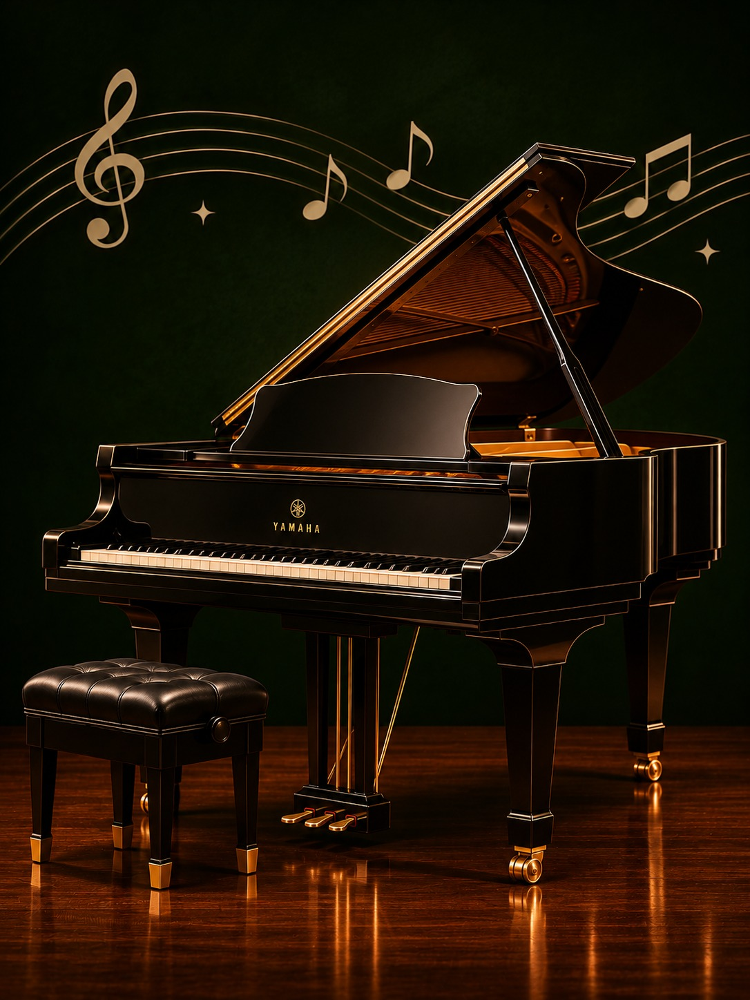

Reconhecer
Identifique diferentes instrumentos e entenda o lugar de cada um dentro da experiência musical.
Instrumentos · escuta · cuidado
Um espaço informativo para reconhecer instrumentos, descobrir suas possibilidades e aprender a cuidar do que faz o som acontecer.
Explorar catálogo
Uma linguagem feita de matéria, gesto e tempo.Sobre o Instrushop
O Instrushop reúne referências sobre instrumentos musicais e equipamentos de áudio em uma linguagem simples, visual e direta.
Identifique diferentes instrumentos e entenda o lugar de cada um dentro da experiência musical.
Observe formas, materiais e detalhes que ajudam a aproximar o visitante do universo da música.
Encontre orientações práticas para manter instrumentos limpos, protegidos e prontos para tocar.
Uma coleção para observar
Passeie pelo catálogo para conhecer instrumentos e equipamentos. Depois, visite o guia para descobrir atitudes simples que prolongam a vida de cada peça.
Ler guia de conservação →